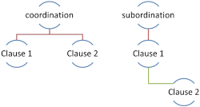
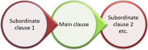

Subordination and Coordination
 |
There are separate guides to coordination and
subordination on
this site linked in the list at the end but this is the first place to come in this area because
the attempt here is to separate the ideas before getting in to an
analysis of each.
The three guides in this area also deal with a number of issues covered in more detail
elsewhere such as conditionality and concession. You can track
other guides to the area via
the index to the section
on syntax: phrases, clauses and sentences linked in the list of
related guides at the end.
 |
Subordination vs. Coordination |
This is the traditional analysis and one which you will find in many teachers' grammars and those written for learners. It is only accurate as far as it goes.
- Coordination involves the joining together of two
potentially independent clauses. For example:
I was unhappy and I left
I was unhappy but I stayed
She was unhappy so she left
She can stay or she can leave
Three notes:- In all these cases, the coordinating conjunction
(hereinafter simply coordinator) can be
replaced by and or removed altogether and leave two
independent clauses (although some sense is lost, the new
simple sentences remain comprehensible and grammatically
acceptable).
I was unhappy. I left
I was unhappy and I left
I was unhappy. I stayed
I was unhappy and I stayed
She was unhappy. She left
She was unhappy and she left
She can stay. She can leave
She can stay and she can leave - It is not possible to move the coordinating conjunction
and an attempt to do so results in ungrammaticality:
*And I was unhappy I left
*But I stayed I was unhappy
*So she left she was unhappy
*Or she can stay she can leave
The coordinator must come between the two clauses which are being joined together to make a compound sentence. Coordinators, in this sense, do not belong to either clause. - The ordering of the clauses is often not reversible but
the restriction is semantic not grammatical. So, for
example, we can have:
She can stay or she can leave
Mary drove and John took the train
We left early so we could catch the train
or
She can stay or she can leave
John took the train and Mary drove
So we could catch the train we left early
with no change in meaning because the coordinators simply connect with no other semantic information grafted on. However, the clauses in:
I called but you were out
She came home and she made herself dinner
cannot be reversed without creating nonsense because in the first case the coordinator represents an adversative meaning and we have to know what it is being opposed to and in the second the coordinator expresses the ordering of events.
It bears repeating, however, that this is not a structural rule, it is a meaning issue.
- In all these cases, the coordinating conjunction
(hereinafter simply coordinator) can be
replaced by and or removed altogether and leave two
independent clauses (although some sense is lost, the new
simple sentences remain comprehensible and grammatically
acceptable).
- Subordination, on the other hand, is an asymmetrical
relationship between two clauses with one, as the name suggests,
being subordinate to and relying on an independent clause for
its meaning. For example:
I left because I was unhappy
I stayed although I was unhappy
She left since she was unhappy
She can stay unless she wants to leave
Two notes:- Only one of the clauses can stand alone (i.e., function
independently) and make a grammatically acceptable sentence.
I left. *Because I was unhappy.
I stayed. *Although I was unhappy.
She left. *Since she was unhappy.
She can stay. *Unless she wants to leave. - The subordinating conjunction (hereinafter simply
subordinator) can be moved because it is an
adjunct and forms part of the subordinate clause so clause
ordering is flexible.
Because I was unhappy, I left
Although I was unhappy, I left
Since she was unhappy, she left
Unless she wants to leave, she can stay
With very rare exceptions (such as the subordinator whereas), clause ordering is unaffected by semantic issues.
- Only one of the clauses can stand alone (i.e., function
independently) and make a grammatically acceptable sentence.
The difference between subordination and coordination can be very simply illustrated like this:

If you have followed the guide to clause structure, linked at the end, you will know that an alternative analysis is to consider the whole sentence or clause as the matrix in which a subordinate clause or clauses can be embedded.
 |
It can get complicated |
The structure of complex sentence (i.e., one involving subordination rather than coordination) can be very complicated so we may have, for example:
She came home because the dogs needed feeding but discovered that there was no food for them so she had to go out to the supermarket and get some before she could relax in order to finish the book she was reading so that she could take part sensibly in the reading circle at the weekend.
In that (made up) sentence there are instances of both coordination and subordination.
An independent clause may itself be coordinated:
She came home and (she) cooked a huge meal
because she was so hungry
This has two coordinated independent clauses with the second having a
subordinate clause. It looks like this:

and subordinate clauses may be coordinated, too:
She came home and she cooked a huge
meal
because she was so hungry
and she hadn't eaten lunch
This has two coordinated independent clauses with the second having
a subordinate clause which is also coordinated. It looks like
this:

and subordinate clauses can have their own subordinate clauses:
She came home and she cooked a huge meal
because she was so hungry since she hadn't
eaten lunch
This has two coordinated independent clauses with the second having
a subordinate clause which itself has a subordinate clause. It
looks like this:

and so on, ad infinitum. There is, in theory at least, no limit to the number of clauses which a sentence may contain. In practice the limit is provided by the brain's ability to process information and that is usually around eight clauses.
 |
Other forms of coordination and subordination |
Coordination and subordination are very often accomplished in
many languages with the use of conjunctions and that is what we have
exemplified so far.
However, the same grammatical functions can be achieved with other
structural resources.
Here is what is meant but for more detail you should go to the
guides dedicated to each area.
- Non-finite verb forms
- Both participle forms and infinitive forms can achieve
coordination and subordination, usually the latter. For
example:
Having no money he walked home (=Because he had no money ...)
To make sure it wouldn't come loose, he nailed it firmly in place (=So that it wouldn't come ,loose ...)
Broken, the pump was no use to me (=As it was broken, ...)
Telling her that will make here angry (=If you tell her that ...)
Working all night, he got it done (He worked all night and ...) - Asyndetic coordination
- Coordination can be achieved without any conjunction at all
so we may have, e.g.:
Tired, unhappy, depressed, he left his home
Spoken to, told what the problem was, he became a reformed character
Subordination is never asyndetic because the joined items are not independent and equal. - Relative pronoun clauses
- Relative pronoun clauses are often indicators of
subordination so we get, e.g.:
The car, which broke down, made me late (=Because the car broke down I was late) - Relative adverb clauses
- Relative adverb clauses also subordinate:
She explained the issue and that was when I realised my mistake (=When she explained the issue, I realised my mistake) - Conjuncts
- Conjuncts can be both subordinating, e.g.:
She was late and consequently missed his speech (=She was late so ...)
and coordinating, e.g.:
She didn't go out. Instead, she worked on her essay (=She didn't go out but worked on her essay) - Prepositions
- Many prepositions have a subordinating or coordinating
function. For example:
After eating, he went off to the cinema (=After he had eaten ...)
In addition to the cooking, he cleaned the kitchen (=He cooked and cleaned the kitchen)
 |
The tendency to the right |
Clauses can be ordered in three main ways. If we take, for example, a simple main clause and a subordinate clause, we can have:
- I asked my question when he paused for thought
in which we have the main clause followed by a subordinate time
clause linked with when.
But there are two other ways we can order the sentence:
- When he paused for thought I asked my question
- I asked, when he paused for thought, my question
The three positions for the subordinate clause are described as Final or Terminal (example 1), Initial (example 2) and Mid or Medial (example 3).
In English, there are strong tendencies which control how we decide where to place the subordinate clause in a sentence. This is the case, however the subordination is achieved.
- We cannot usually embed one subordinate clause within another in the initial
position so while we allow:
I came because he invited me when he realised I would be alone for Christmas
where we have two subordinate clauses, one red and one green following the main clause in black, we cannot usually embed the subordinate clauses and allow:
*Because when he realised I would be alone for Christmas he invited me I came
It is possible to have both the subordinated clauses in initial position as in:
Because he invited me when he realised I would be alone for Christmas, I came
but that is quite rare and the longer either or both of the subordinate clauses becomes, the more difficult it is to understand the sentence. For example:
Because he was kind and generous enough to invite me when he realised that this would be the first Christmas I was spending alone since my divorce, I came
is very clumsy. - It is also possible to place one subordinate clause within another
following the main clause,
thus embedding it as in:
I came because, when he realised I would be alone for Christmas, he invited me
but embedding a subordinate clause within another generally makes comprehension difficult and is usually avoided. - When there is no subordinating conjunction, the rules of English
syntax make it impossible to construct a complex sentence with two
subordinate clauses in the initial position so:
*Because he invited me realising I would be alone for Christmas I came
The result of these restrictions is that the more complex a sentence becomes and the
more subordination it includes the stronger will be the tendency to
place subordinate clauses to the right of the main clause.
We may begin a sentence with a subordinate clause (and frequently
do) but any subsequent subordination will usually follow the main
clause and not precede it or be embedded within it.
If you prefer diagrams,
the structure of most complex sentences in English will either be:

or

Other arrangements are possible but much rarer and often very
difficult to understand.
This right-ordering tendency applies to English syntax and may not
be parallelled in your learners' first language(s).
 |
Coordination vs. subordination: the cline |
The difference between coordinator and subordinators is actually a rather more complicated matter than the analysis so far has revealed.
It is tempting but ultimately misleading to make a sharp
distinction between coordination and subordination. The
reality of the English language is that there is a cline from the
conjunctions which may be considered central coordinators and those
which may be considered full subordinators only with some grey areas
in between concerning conjunctions which exhibit characteristics of
both.
There are a number of criteria for identifying the nature of
coordinators which are discussed in the guide to coordination.
In some analyses, there are the following coordinating
conjunctions:
and, or, but, for (in its meaning of because), yet, nor
and so that.
All other conjunctions are subordinators, correlative or otherwise.
The guide to coordination makes it clear, however, that only and,
or and but (probably) meet the criteria for true
coordinators and the rest are in some way defective.
The true picture is more like:

or:

 |
To explain |
The true coordinators are, arguably, only the words and and or because:
- They remain immobile between clauses.
We can reverse the ordering of the clauses with and, providing there is no semantic prohibition (which there usually is, in fact). That means that we allow, for example:
John visited to his mother and telephoned his father
and
John telephoned his father and visited his mother
because it is unimportant to signal which action came first or whether there was any logical, causal connection between the clauses.
Usually, such reversal is not allowed because we cannot change
John came home and cooked a meal
into:
John cooked a meal and came home
because it sends a very different message.
The conjunction or is rather more forgiving because it does not usually signal the temporal ordering of events or any causal connection so both:
John will take the train or rent a car
and
John will rent a car or take the train
perform a synonymous (but slightly differently emphasised) communicative function.
We cannot, however, move either conjunction to the beginning of the sentence and have:
*And cooked a meal John came home
or
*Or rent a car John will take the train - Are never preceded by other conjunctions so we do not allow:
*You can take the train because or the bus
*She went to his house but and he was out
and so on. - They allow us to omit the subject if it is the same
for both clauses so we can have:
John came to the party and met her there
or
John came to the party and he met her there.
However, any alteration in the subject produces nonsense or sends the wrong signal if one is omitted, so:
John came to the party and she spoke to him there
has to retain the subjects because they differ so:
John came to the party and spoke to him there
sends a very different message.
There are other tests to identify true or central coordinators which are considered in the guide devoted to them, linked below. Here's the sort of things that is meant:
The causal coordinators for and so that share
the first two of these characteristics but not the third because we
can have:
I didn't suggest it for I knew she would
object
and
It was getting light so that I could see the
mountains
but we cannot allow
*For she would object I didn't suggest it
*So that I could see the mountains it was
getting light
because the conjunctions are immobile between clauses (1. above)
or
*I didn't suggest it because for she would
object
*It was getting light and so that I could see
the mountains
because the conjunctions cannot be preceded by another (2. above).
However, we also do not allow:
*I didn't suggest it for knew she would
object
or
*It was getting light so that could see the
mountains
because the conjunctions require the subject in both clauses.
The adversative coordinator but does allow the omission of
the subject as in:
I looked everywhere but (I) couldn't see her
See the dedicated guide linked below for more on the restrictions on coordinators in particular.
 |
Causal conjunctions |
English is slightly unusual in having no fewer than 6 causal conjunctions:
- because
As in:
John was late because his train was delayed - so
As in:
John's train was delayed so he was late - as
As in:
John was late as his train was delayed - since
As in:
John was late since his train was delayed - for
As in:
John was late for his train was delayed - so that
As in:
John's train was delayed so that he was late
There are, however, some obvious differences:
- style
-
- because and so are neutral in style, both being used to signal causality in everything from casual speech to the most formal writing.
- as and since are generally more formal and the latter is falling rapidly out of fashion, being confined to its grammatical functions of preposition and adverb. The conjunction as is also unusual in this use because it, too, often functions as a temporal subordinating conjunction (akin to when) and as an adverb or even a relative pronoun.
- so that is rare as a resultative conjunction and is mostly confined to its purposive meaning (akin to in order to).
- for is the most formal of these and is now limited in this use to formal writing for the most part.
- structure
-
- because and as are the most mobile and
we can accept:
Because his train was delayed, John was late
John was late because his train was delayed
Because John's train was delayed, he was late
As his train was delayed, John was late
John was late as his train was delayed
As John's train was delayed, he was late - so is less mobile because it lies at the
coordinating end of the cline and when the clauses are
reversed, generally produces nonsense so while:
His train was delayed so John was late
John's train was delayed so he was late
are both acceptable, we do not allow:
*So John was late, his train was delayed
or
*So he was late, John's train was delayed
because the word's coordinating rather than subordinating characteristics tie it to the central position.
(When the word operates to signal purpose rather than result, it acts as a subordinating conjunction and moves with its clause.) - so that is a coordinator only
and cannot be used as a subordinator. Moreover, its
use is mostly confined to a purposive subordinator. As
a coordinating, causal conjunction, we can allow:
His train was delayed so that John was late
and
John's train was delayed so that he was late
which is slightly unusual because coordinating conjunctions do not, on the whole, allow both directions of referencing for a pronoun.
We do not allow reversal of the clauses because that then implies the purposive role for the conjunction and
So that he was late, John's train was delayed
can only mean that someone deliberately delayed the train to make John late.
(In the latter, subordinating and non-resultative, purposive role, it is quite flexible so we can allow, e.g.:
I glued it so that it wouldn't move
So that it wouldn't move, I glued it) - for is also a coordinator only
and cannot be used as a subordinator. Therefore, we
allow:
John was late for his train was delayed
but we do not allow the reversal of the clauses such as in:
*For his train was delayed, John was late
because coordinators always lie between the clauses, or any other formulations such as:
*He was late for John's train was delayed
because most coordinators only allow anaphoric pronoun reference (see below).
- because and as are the most mobile and
we can accept:
There is a range of other ways to signal cause and effect in English, including non-finite clauses such as seeing that and complex prepositions such as as a result of, on account of and so on. Here, we are only concerned with conjunctions but if you'd like to learn more, try the guide to cause and effect, linked below.
 |
Pronouns |
When subordinators are used, pronoun reference can work both forward
in the text (cataphoric) and backwards (anaphoric) so we allow, for
example:
Because she was angry, Mary argued (reference →)
Because Mary was angry, she argued (reference ←)
Although he arrived late, John didn't miss the speeches
(reference →)
Although John arrived late, he didn't miss the speeches
(reference ←)
When he arrived at the station, Fred saw the train had
already left (reference →)
When Fred arrived at the station, he saw the train had
already left (reference ←)
However, true coordinators only allow anaphoric reference so, while
we allow:
Mary was unhappy and she argued (reference ←)
John arrived late but he didn't miss the
speeches (reference ←)
we do not allow:
She argued and Mary was unhappy
unless she and Mary refer to different people, or
He didn't miss the speeches but John arrived late
unless he and John refer to different people.
There's a test on some of this.
| Related guides | |
| clause structure | which considers matrix and embedded clauses |
| coordination | to consider how clauses of equal weight are joined |
| subordination | to consider how unequal or dependent clauses are joined |
| conjunction | for a general overview of the ways clauses can be linked |
| cause and effect | for a guide to how the function of expressing cause and effect may be realised in English |
| conjuncts | which are not conjunctions but also serve to subordinate or coordinate |
| adverbials | a guide explaining adjuncts, disjuncts and conjuncts |